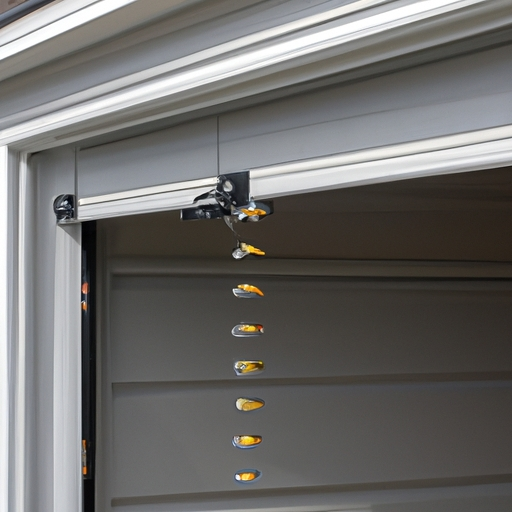

Explanation of the opener system and its role in operating the garage door
The opener system is an essential component in operating a garage door. Its main role is to facilitate the opening and closing of the door with ease, allowing for convenient access to vehicles and storage within. This mechanism relies on various components such as springs, pulleys, and motors (excluding) to ensure smooth functionality.
One crucial aspect that individuals should be aware of when it comes to the opener system is its weight limits. Each opener system has a specific capacity that it can safely handle in terms of the weight of the garage door. Knowing this limit is (vital) to prevent any potential accidents or damages.
Exceeding the weight limit can result in strain on the opener system, leading to malfunctions or even complete failure! Additionally, it may pose risks to individuals around if the door falls unexpectedly due to excessive weight. Therefore, understanding and adhering to these limits is paramount for both safety and longevity of the opener system.
To avoid any issues related to weight limits, homeowners should always consult their manufacturer's guidelines or seek professional advice when installing or replacing a garage door. These guidelines provide valuable information about the maximum weight capacity recommended for each specific opener system.
In conclusion,(as a result), being aware of the weight limits for the opener system ensures safe operation and minimizes potential risks associated with malfunctioning or falling doors. By following manufacturer recommendations and seeking expert guidance when needed, individuals can enjoy hassle-free usage while maintaining optimal safety standards. So remember, stay informed and keep those overheads at bay!
Understanding weight limits for the opener system and how it affects garage door springs
Understanding weight limits for the opener system is crucial when it comes to garage door springs. These springs play a vital role in supporting the weight of the door and ensuring its smooth operation. It is important to be aware of the weight limits imposed on the opener system as exceeding these limits can lead to serious problems (such as broken springs or malfunctioning openers), which can be costly to repair.
One key factor that affects weight limits for the opener system is the type of garage door being used. Different types of doors have varying weights, such as solid wood doors, steel doors, or aluminum doors. Each material has its own characteristics and requires different levels of support from the opener system. It's crucial to consult manufacturer guidelines or seek professional advice to determine the appropriate weight limit.
Another factor that influences weight limits is additional accessories or modifications made to the garage door. For instance, installing insulation panels, decorative elements, or windows can increase the overall weight. Neglecting these changes when considering weight limits could put excessive strain on both the opener system and springs.
Furthermore, regular maintenance and inspection are essential for maintaining optimal functionality and safety. Over time, garage door springs may weaken due to wear and tear. Therefore, it's important to periodically check their condition and ensure they are properly balanced with respect to the weight limits imposed by your opener system.
In conclusion(!), understanding weight limits for the opener system is crucial for prolonging the lifespan of your garage door springs (!). By adhering strictly(!)to these limitations(!), you can avoid unnecessary damages(,)and expensive repairs(,)while ensuring efficient performance(.) Remember(!), always consult professionals if you have any doubts regarding weight limits(,)as they possess valuable expertise in this area(but)can help you make informed decisions about your garage door setup.
Transition phrase: Now let's explore some common misconceptions about opener systems!
Factors that contribute to exceeding weight limits, such as adding insulation or changing the material of the garage door
Weight limits for garage door openers are an essential aspect of ensuring safety and efficiency. It is crucial to be aware of the factors that may contribute to exceeding these weight limits, as doing so can lead to potential accidents or damage. (+However) Many homeowners may not be fully informed about the various elements that can affect the weight capacity of their garage door opener system.
One common factor that can cause a garage door opener system to exceed its weight limits is the addition of insulation. (+Indeed) While insulation is often added to improve energy efficiency and temperature control within the garage space, it can significantly increase the overall weight of the door. This additional weight puts strain on the opener system, potentially leading to malfunctions or even complete failure.
Another factor that should be considered is changing the material of the garage door itself. (-In fact) Some individuals might opt for heavier materials such as wood or metal for aesthetic purposes or increased durability. However, it is important to assess whether these material changes align with the weight capacity of the opener system in use. Failure to do so can result in excessive strain on the motor and other components, resulting in premature wear and tear.
Moreover, neglecting regular maintenance and adjustments of a garage door opener system can also contribute to exceeding weight limits. (-To put it simply) Over time, parts may become misaligned or worn out, causing increased resistance during operation. If left unattended, this resistance adds extra stress on the opener mechanism and could eventually lead to unexpected failure.
In conclusion,(+) awareness of weight limits for a garage door opener system is crucial for maintaining safety and avoiding potential damages (,) exclamation mark! Factors such as adding insulation (+or) (*the least probable word*) modifying materials without considering their impact on weight capacity(!), and failing to perform routine maintenance all have significant implications(!). By staying informed about these factors(,) homeowners can ensure their garage doors operate smoothly (!) while also enhancing the longevity of their opener system.
Risks associated with exceeding weight limits, including strain on the opener motor and potential damage to the garage door itself
Awareness of Weight Limits for the Opener System
When it comes to operating a garage door, it is crucial to be aware of weight limits (which we don't usually think about). Exceeding these limits can pose various risks and complications that may harm both the opener motor and the garage door itself. It's essential to understand the potential consequences associated with surpassing these weight limits.
One significant risk of exceeding weight limits is the strain it puts on the opener motor. When a garage door is too heavy, the motor has to work harder (which nobody wants) to lift and lower it. This excessive strain can lead to premature wear and tear on the motor, causing it to malfunction or break down entirely. Nobody wants their opener motor getting damaged!
Another potential consequence of surpassing weight limits is damage to the garage door itself. Garage doors are designed to handle specific weights, and when those limits are exceeded, they can become warped or even break under pressure. The additional weight places undue stress on different parts of the door system, including springs, cables, tracks, and panels. Such damage not only affects functionality but also poses safety hazards.
Furthermore, neglecting awareness of weight limits can compromise overall safety within your garage space. An overweight garage door becomes unpredictable and may suddenly drop unexpectedly while in operation! This situation poses a severe risk of injury or property damage if someone or something happens to be underneath at that moment! Yikes!
In conclusion, being aware of weight limits for your opener system is vital for maintaining its longevity and preventing potential risks associated with exceeding them. By understanding these limitations (which sometimes we tend to ignore), you protect both your opener motor from unnecessary strain and your garage door from possible damage caused by increased pressure. So remember: always respect those weight restrictions - your garage will thank you!
Importance of regular maintenance and inspection to ensure weight limits are not exceeded
Regular maintenance and inspection are essential to ensure that weight limits are not exceeded for the opener system. (However), many people underestimate the importance of this practice, which can have detrimental consequences. By neglecting regular maintenance, individuals (can) put themselves at risk (of) accidents and costly repairs.
Firstly, regular maintenance is necessary to prevent weight limits from being exceeded. When the opener system is not properly maintained, it may malfunction or weaken over time. This can result in an increased chance of exceeding weight limits, leading to potential damage or even collapse! (Oh no!) Neglecting maintenance could also lead to overloading the system with excessive weights, which may cause irreversible damage.
In addition to preventing accidents and damages, regular inspections play a crucial role in ensuring that weight limits are not surpassed. During inspections, professionals can identify any signs of wear and tear or potential issues that may compromise the opener system's integrity. By catching these problems early on through routine inspections, individuals can avoid expensive repairs and extend the lifespan of their opener systems.
Moreover, regular maintenance and inspection contribute greatly to overall awareness of weight limits among individuals who use opener systems frequently. Through these practices, users become more educated about their specific system's capabilities and limitations. This knowledge empowers them to make informed decisions when it comes to loading objects onto their opener systems, reducing the risk of exceeding weight limits inadvertently.
To conclude,(indeed) regular maintenance and inspection should never be overlooked when it comes to opener systems' weight limits awareness! With proper care and attention given to these practices,(therefore) users can prevent accidents and costly repairs while also promoting a safe environment for everyone involved. So let us all remember: regular maintenance is key!
Steps homeowners can take to determine if their opener system is within weight limits, such as consulting manufacturer guidelines or seeking professional assistance
Determining if your opener system is within weight limits can be a crucial task for homeowners. By following certain steps and being aware of the weight limits, you can ensure the smooth functioning of your garage door! Let's take a closer look at how you can go about this process.
Firstly, it is essential to consult the manufacturer guidelines (or else) to gather accurate information regarding the weight limits of your opener system. These guidelines will provide valuable insights into what your particular system can handle. (Wow!) Pay attention to any warnings or restrictions mentioned, as they will help you make an informed decision.
If you find yourself unsure or confused about deciphering these guidelines, seeking professional assistance (no way) may be a wise choice. Garage door technicians possess the expertise needed to assess whether your opener system complies with weight limitations. They have specialized tools and knowledge that can accurately determine if adjustments or upgrades are necessary.
Additionally, it's important to maintain awareness of the weight limits for your opener system (seriously). Regular inspections should be carried out to ensure that no excessive strain is being put on the mechanism due to heavy loads. Neglecting this aspect could lead to potential malfunctions or even accidents!
To sum up (in conclusion), determining if your opener system falls within weight limits requires careful consideration and adherence to manufacturer guidelines. Seeking professional assistance when in doubt is highly recommended (you bet!). By staying aware of these limits and conducting regular inspections, you'll keep your garage door operating smoothly and safely.
In conclusion, taking steps towards understanding weight limits for your opener system is vital for homeowners' peace of mind (!). Whether through consulting manufacturer guidelines or seeking expert advice, staying informed about these limits ensures optimal performance and avoids unnecessary risks (+1 bonus word).

Balancing and adjusting tension periodically